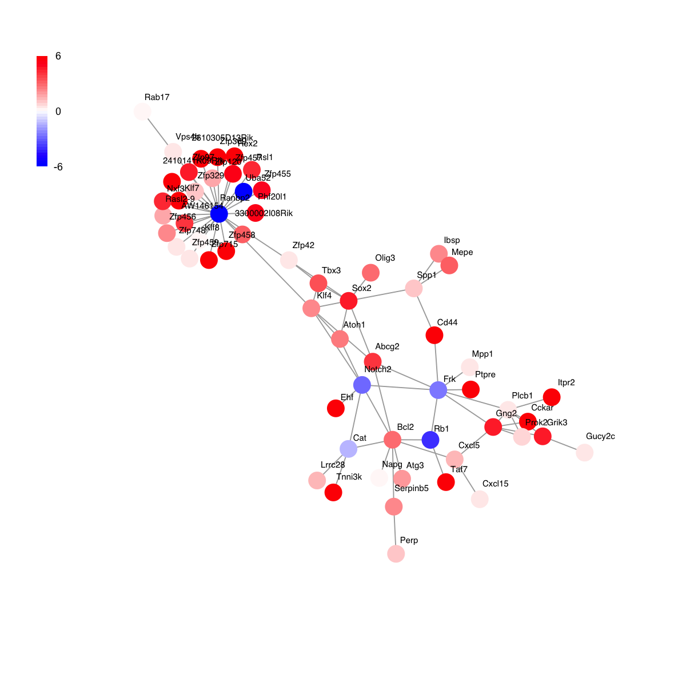
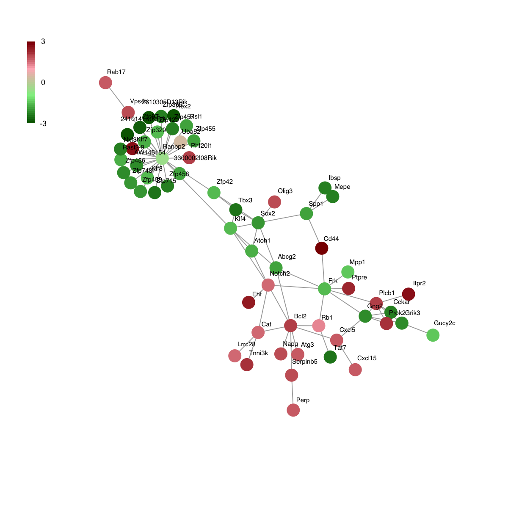
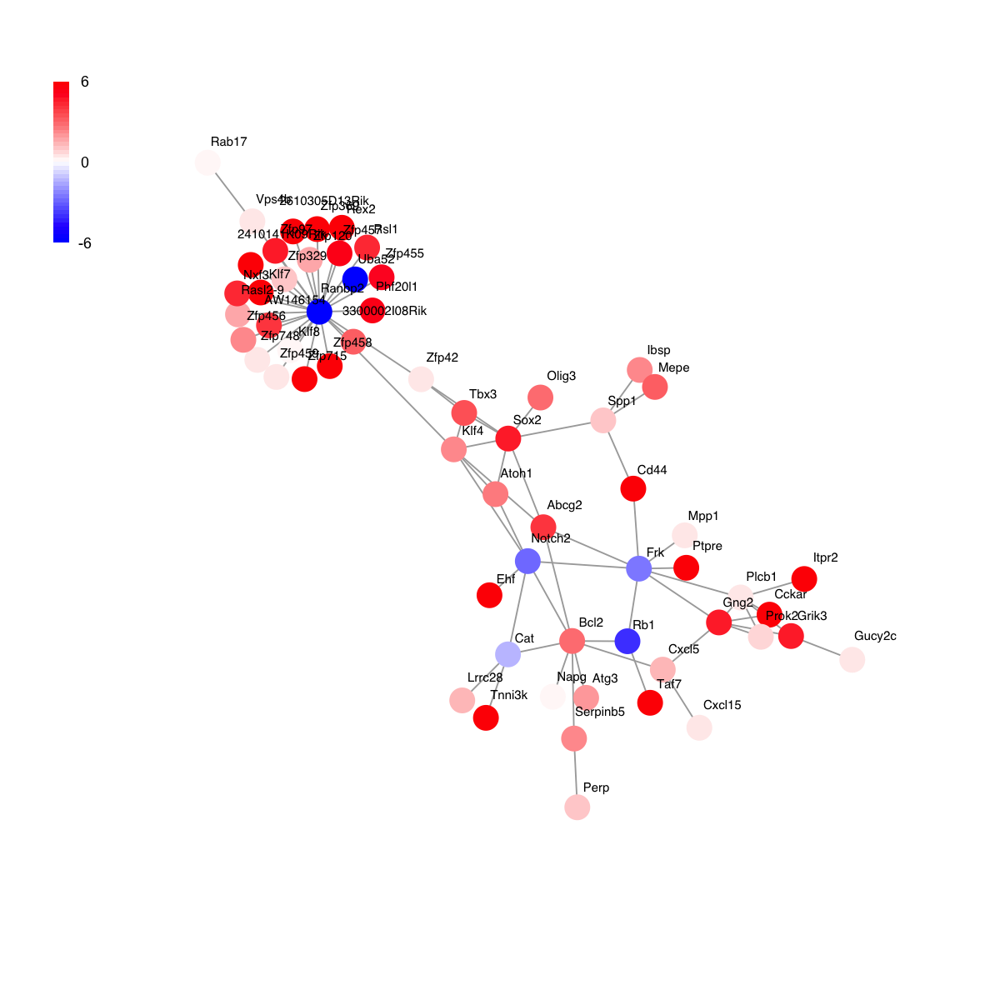
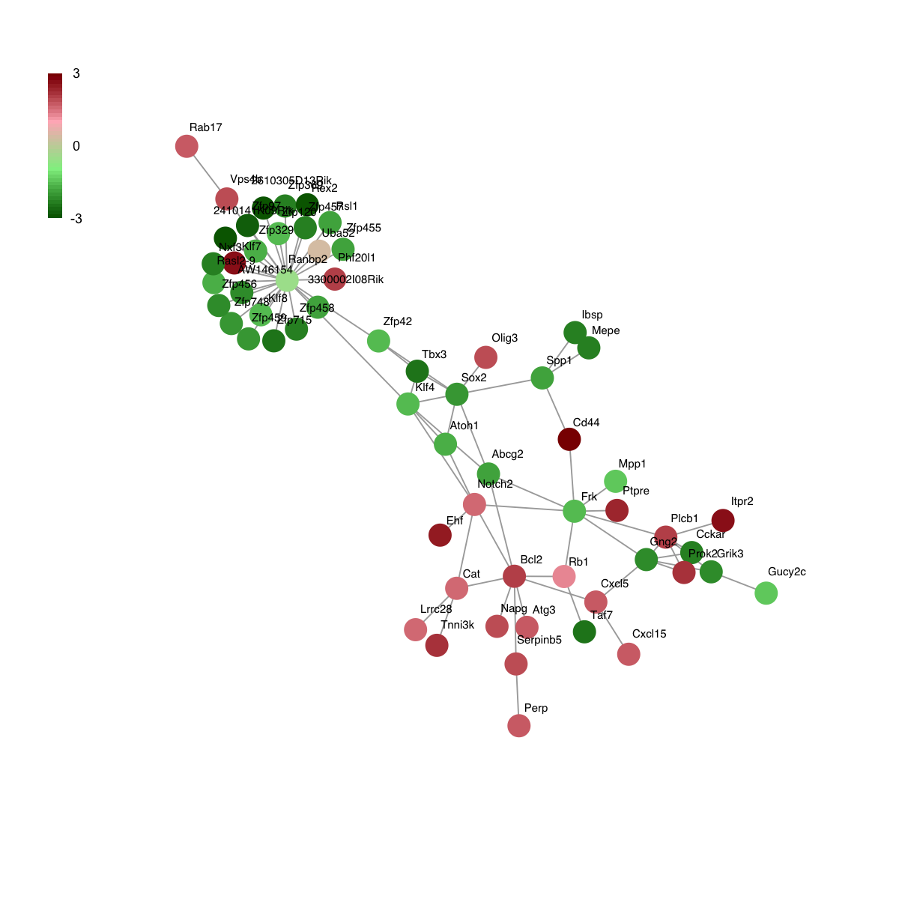

[1] "CpG" "EX" "RT"
# Load the package 'dnet'
library(dnet)
# Load or/and install packages "Biobase" and "limma" that are specifically used in this demo
for(pkg in c("Biobase","limma")){
if(!require(pkg, character.only=T)){
source("http://bioconductor.org/biocLite.R")
biocLite(pkg)
lapply(pkg, library, character.only=T)
}
}
# Here, we are interested to analyse replication timing data and their difference between different sample groups
# To this end, it is better to create the 'eset' object including sample grouping indication information
group <- c(rep("ESC",3), rep("iPSC",3), rep("eEpiblast",2), rep("lEpiblast",2), rep("Ectoderm",4), rep("Mesoderm",1), rep("Endoderm",1), rep("piPSC",3), rep("Myoblast",3))
pdata <- data.frame(group=group, row.names=colnames(RT))
esetGene <- new("ExpressionSet", exprs=as.matrix(RT), phenoData=as(pdata,"AnnotatedDataFrame"))
esetGene
ExpressionSet (storageMode: lockedEnvironment)
assayData: 17292 features, 22 samples
element names: exprs
protocolData: none
phenoData
sampleNames: ESC_46C ESC_D3 ... Myoblast (22 total)
varLabels: group
varMetadata: labelDescription
featureData: none
experimentData: use 'experimentData(object)'
Annotation:
# Look at the samples and their groups belonging to
pData(esetGene)
group
ESC_46C ESC
ESC_D3 ESC
ESC_TT2 ESC
iPSC iPSC
iPSC_1D4 iPSC
iPSC_2D4 iPSC
EPL eEpiblast
EBM3_D3 eEpiblast
EpiSC5 lEpiblast
EpiSC7 lEpiblast
EBM6_D3 Ectoderm
NPC_46C Ectoderm
NPC_TT2 Ectoderm
EBM9_D3 Ectoderm
Mesoderm Mesoderm
Endoderm Endoderm
piPSC_1A2 piPSC
piPSC_1B3 piPSC
piPSC_V3 piPSC
MEF_female Myoblast
MEF_male Myoblast
Myoblast Myoblast
'org.Mm.string' (from http://supfam.org/dnet/data/Mm/org.Mm.string.RData) has been loaded into the working environment
org.Mm.string
IGRAPH UN-- 17671 407978 --
+ attr: name (v/c), seqid (v/c), geneid (v/n), symbol (v/c),
description (v/c), neighborhood_score (e/n), fusion_score (e/n),
cooccurence_score (e/n), coexpression_score (e/n), experimental_score
(e/n), database_score (e/n), textmining_score (e/n), combined_score
(e/n)
# Look at the first 5 node information (gene symbols)
V(org.Mm.string)$symbol[1:5]
[1] "Arf2" "Gabrb2" "Hspa1b" "Tarsl2" "Fam134b"
IGRAPH UN-- 13062 290589 --
+ attr: name (v/c), seqid (v/c), geneid (v/n), symbol (v/c),
description (v/c)
# Identification of gene-active subnetwork
# 1) obtain the information associated with nodes/genes, such as the p-value significance as node information
# Here, we use the package 'limma' to identify differential Replication timing
## define the design matrix in an order manner
all <- as.vector(pData(esetGene)$group)
level <- levels(factor(all))
index_level <- sapply(level, function(x) which(all==x)[1])
level_sorted <- all[sort(index_level, decreasing=F)]
design <- sapply(level_sorted, function(x) as.numeric(all==x)) # Convert a factor column to multiple boolean columns
design
ESC iPSC eEpiblast lEpiblast Ectoderm Mesoderm Endoderm piPSC Myoblast
[1,] 1 0 0 0 0 0 0 0 0
[2,] 1 0 0 0 0 0 0 0 0
[3,] 1 0 0 0 0 0 0 0 0
[4,] 0 1 0 0 0 0 0 0 0
[5,] 0 1 0 0 0 0 0 0 0
[6,] 0 1 0 0 0 0 0 0 0
[7,] 0 0 1 0 0 0 0 0 0
[8,] 0 0 1 0 0 0 0 0 0
[9,] 0 0 0 1 0 0 0 0 0
[10,] 0 0 0 1 0 0 0 0 0
[11,] 0 0 0 0 1 0 0 0 0
[12,] 0 0 0 0 1 0 0 0 0
[13,] 0 0 0 0 1 0 0 0 0
[14,] 0 0 0 0 1 0 0 0 0
[15,] 0 0 0 0 0 1 0 0 0
[16,] 0 0 0 0 0 0 1 0 0
[17,] 0 0 0 0 0 0 0 1 0
[18,] 0 0 0 0 0 0 0 1 0
[19,] 0 0 0 0 0 0 0 1 0
[20,] 0 0 0 0 0 0 0 0 1
[21,] 0 0 0 0 0 0 0 0 1
[22,] 0 0 0 0 0 0 0 0 1
[1] "iPSC_ESC" "eEpiblast_ESC" "lEpiblast_ESC"
[4] "Ectoderm_ESC" "Mesoderm_ESC" "Endoderm_ESC"
[7] "piPSC_ESC" "Myoblast_ESC" "eEpiblast_iPSC"
[10] "lEpiblast_iPSC" "Ectoderm_iPSC" "Mesoderm_iPSC"
[13] "Endoderm_iPSC" "piPSC_iPSC" "Myoblast_iPSC"
[16] "lEpiblast_eEpiblast" "Ectoderm_eEpiblast" "Mesoderm_eEpiblast"
[19] "Endoderm_eEpiblast" "piPSC_eEpiblast" "Myoblast_eEpiblast"
[22] "Ectoderm_lEpiblast" "Mesoderm_lEpiblast" "Endoderm_lEpiblast"
[25] "piPSC_lEpiblast" "Myoblast_lEpiblast" "Mesoderm_Ectoderm"
[28] "Endoderm_Ectoderm" "piPSC_Ectoderm" "Myoblast_Ectoderm"
[31] "Endoderm_Mesoderm" "piPSC_Mesoderm" "Myoblast_Mesoderm"
[34] "piPSC_Endoderm" "Myoblast_Endoderm" "Myoblast_piPSC"
## a linear model is fitted for every gene by the function lmFit
fit <- lmFit(exprs(esetGene), design)
## computes moderated t-statistics and log-odds of differential expression by empirical Bayes shrinkage of the standard errors towards a common value
fit2 <- contrasts.fit(fit, contrast.matrix)
fit2 <- eBayes(fit2)
## for p-value
pvals <- as.matrix(fit2$p.value)
## for adjusted p-value
adjpvals <- sapply(1:ncol(pvals),function(x) {
p.adjust(pvals[,x], method="BH")
})
colnames(adjpvals) <- colnames(pvals)
## num of differentially expressed genes
apply(adjpvals<1e-2, 2, sum)
iPSC_ESC eEpiblast_ESC lEpiblast_ESC Ectoderm_ESC
0 102 1134 2120
Mesoderm_ESC Endoderm_ESC piPSC_ESC Myoblast_ESC
1050 959 2612 4171
eEpiblast_iPSC lEpiblast_iPSC Ectoderm_iPSC Mesoderm_iPSC
116 1224 2660 1147
Endoderm_iPSC piPSC_iPSC Myoblast_iPSC lEpiblast_eEpiblast
1167 2527 4862 91
Ectoderm_eEpiblast Mesoderm_eEpiblast Endoderm_eEpiblast piPSC_eEpiblast
563 95 106 1340
Myoblast_eEpiblast Ectoderm_lEpiblast Mesoderm_lEpiblast Endoderm_lEpiblast
2858 112 188 254
piPSC_lEpiblast Myoblast_lEpiblast Mesoderm_Ectoderm Endoderm_Ectoderm
1119 2736 118 346
piPSC_Ectoderm Myoblast_Ectoderm Endoderm_Mesoderm piPSC_Mesoderm
2373 2929 3 970
Myoblast_Mesoderm piPSC_Endoderm Myoblast_Endoderm Myoblast_piPSC
1362 1146 1773 2986
## only for the comparisons of piPSC against iPSC
my_contrast <- "piPSC_iPSC"
## get the p-values and calculate the scores thereupon
pval <- pvals[,my_contrast]
## look at the distribution of p-values
hist(pval)
 Start at 2014-07-02 11:48:47
First, fit the input p-value distribution under beta-uniform mixture model...
A total of p-values: 17292
Maximum Log-Likelihood: 17957.4
Mixture parameter (lambda): 0.412
Shape parameter (a): 0.218
Second, determine the significance threshold...
significance threshold: 5.50e-07
Third, calculate the scores according to the fitted BUM and FDR threshold (if any)...
Amongst 17292 scores, there are 188 positives.
Finally, find the subgraph from the input graph with 13062 nodes and 290589 edges...
Size of the subgraph: 46 nodes and 61 edges
Finish at 2014-07-02 11:49:41
Runtime in total is: 54 secs
Start at 2014-07-02 11:48:47
First, fit the input p-value distribution under beta-uniform mixture model...
A total of p-values: 17292
Maximum Log-Likelihood: 17957.4
Mixture parameter (lambda): 0.412
Shape parameter (a): 0.218
Second, determine the significance threshold...
significance threshold: 5.50e-07
Third, calculate the scores according to the fitted BUM and FDR threshold (if any)...
Amongst 17292 scores, there are 188 positives.
Finally, find the subgraph from the input graph with 13062 nodes and 290589 edges...
Size of the subgraph: 46 nodes and 61 edges
Finish at 2014-07-02 11:49:41
Runtime in total is: 54 secs
g
IGRAPH UN-- 46 61 --
+ attr: name (v/c), seqid (v/c), geneid (v/n), symbol (v/c),
description (v/c), score (v/n)
 

Start at 2014-07-02 11:49:51
First, define topology of a map grid...
Second, initialise the codebook matrix given a topology and input data...
Third, get training at the rough stage...
Fourth, get training at the finetune stage...
Next, identify the best-matching hexagon/rectangle for the input data...
Finally, append the response data (hits and mqe) into the sMap object...
Below are the summaries of the training results:
dimension of input data: 22x61
xy-dimension of map grid: xdim=9, ydim=9
grid lattice: rect
grid shape: sheet
dimension of grid coord: 81x2
initialisation method: linear
dimension of codebook matrix: 81x61
mean quantization error: 0.682658433371273
Below are the details of trainology:
training algorithm: sequential
alpha type: invert
training neighborhood kernel: gaussian
trainlength (x input data length): 37 at rough stage; 148 at finetune stage
radius (at rough stage): from 2 to 1
radius (at finetune stage): from 1 to 1
End at 2014-07-02 11:49:56
Runtime in total is: 5 secs


Start at 2014-07-02 11:49:51
First, define topology of a map grid...
Second, initialise the codebook matrix given a topology and input data...
Third, get training at the rough stage...
Fourth, get training at the finetune stage...
Next, identify the best-matching hexagon/rectangle for the input data...
Finally, append the response data (hits and mqe) into the sMap object...
Below are the summaries of the training results:
dimension of input data: 22x61
xy-dimension of map grid: xdim=9, ydim=9
grid lattice: rect
grid shape: sheet
dimension of grid coord: 81x2
initialisation method: linear
dimension of codebook matrix: 81x61
mean quantization error: 0.682658433371273
Below are the details of trainology:
training algorithm: sequential
alpha type: invert
training neighborhood kernel: gaussian
trainlength (x input data length): 37 at rough stage; 148 at finetune stage
radius (at rough stage): from 2 to 1
radius (at finetune stage): from 1 to 1
End at 2014-07-02 11:49:56
Runtime in total is: 5 secs

# 7) heatmap of replication timing data in the subnetwork
visHeatmapAdv(data, colormap=colormap, KeyValueName="log2(Early/Late)")

# 8) output the subnetwork and their replication timing data
## Write the subnetwork into a SIF-formatted file (Simple Interaction File)
sif <- data.frame(source=get.edgelist(g)[,1], type="interaction", target=get.edgelist(g)[,2])
write.table(sif, file=paste(my_contrast,".sif", sep=""), quote=F, row.names=F,col.names=F,sep="\t")
## Output the corresponding replication timing data
hmap <- data.frame(Symbol=rownames(data), data)
write.table(hmap, file=paste(my_contrast,".txt", sep=""), quote=F, row.names=F,col.names=T,sep="\t")
# 9) enrichment analysis for genes in the subnetwork
## get a list of genes in the subnetwork
data <- V(g)$name
data
[1] "Cckar" "Rasl2-9" "Gng2" "Zfp369" "Zfp110" "Sdha"
[7] "Tnfaip3" "Col10a1" "Trp53" "Nt5dc1" "Ereg" "Cryz"
[13] "Ngfrap1" "Ibsp" "Bcl2" "Spg20" "Atoh1" "Mepe"
[19] "Cat" "Lig1" "Ubb" "Vim" "Slc1a2" "Plcb1"
[25] "Pdhx" "Uqcrb" "Itpr2" "Perp" "Sox2" "Cxcl5"
[31] "Serpinb5" "Klf4" "Wbp5" "Lrp2" "Runx2" "Spp1"
[37] "Tspyl1" "Akt1" "Areg" "Tbx3" "Btc" "Cd44"
[43] "Abcg2" "Dppa2" "Zfp42" "Grik3"
Start at 2014-07-02 11:51:07
First, load the ontology GOBP and its gene associations in the genome Mm (2014-07-02 11:51:07) ...
Load Enterz Gene information from http://supfam.org/dnet/data/Mm/org.Mm.eg.RData
Load annotation information from http://supfam.org/dnet/data/Mm/org.Mm.egGOBP.RData
Then, do mapping based on symbol (2014-07-02 11:51:07) ...
Among 46 symbols of input data, there are 46 mappable via official gene symbols but 0 left unmappable
Third, perform enrichment analysis using HypergeoTest (2014-07-02 11:51:07) ...
There are 1821 terms being used, each restricted within [10,1000] annotations
Last, adjust the p-values using the BH method (2014-07-02 11:51:07) ...
End at 2014-07-02 11:51:08
Runtime in total is: 1 secs
'ig.GOBP' (from http://supfam.org/dnet/data/Obo/ig.GOBP.RData) has been loaded into the working environment
setID nSet nOverlap zscore pvalue adjp
GO:0007173 GO:0007173 25 3 10.30 1.1e-06 1.4e-05
GO:0019827 GO:0019827 54 4 9.19 7.9e-07 1.4e-05
GO:0043066 GO:0043066 415 9 6.73 6.1e-07 1.4e-05
GO:0007569 GO:0007569 27 3 9.88 1.6e-06 1.5e-05
GO:0048662 GO:0048662 34 3 8.74 4.1e-06 2.6e-05
GO:0051402 GO:0051402 34 3 8.74 4.1e-06 2.6e-05
GO:0021987 GO:0021987 42 3 7.80 9.7e-06 5.0e-05
GO:0051781 GO:0051781 44 3 7.60 1.2e-05 5.0e-05
GO:0071363 GO:0071363 44 3 7.60 1.2e-05 5.0e-05
GO:0001649 GO:0001649 48 3 7.25 1.7e-05 5.8e-05
name namespace
GO:0007173 epidermal growth factor receptor signaling pathway Process
GO:0019827 stem cell maintenance Process
GO:0043066 negative regulation of apoptotic process Process
GO:0007569 cell aging Process
GO:0048662 negative regulation of smooth muscle cell proliferation Process
GO:0051402 neuron apoptotic process Process
GO:0021987 cerebral cortex development Process
GO:0051781 positive regulation of cell division Process
GO:0071363 cellular response to growth factor stimulus Process
GO:0001649 osteoblast differentiation Process
distance
GO:0007173 10
GO:0019827 4
GO:0043066 8
GO:0007569 4
GO:0048662 7
GO:0051402 6
GO:0021987 4
GO:0051781 6
GO:0071363 6
GO:0001649 5
 Start at 2014-07-02 11:51:12
First, load the ontology GOMF and its gene associations in the genome Mm (2014-07-02 11:51:12) ...
Load Enterz Gene information from http://supfam.org/dnet/data/Mm/org.Mm.eg.RData
Load annotation information from http://supfam.org/dnet/data/Mm/org.Mm.egGOMF.RData
Then, do mapping based on symbol (2014-07-02 11:51:12) ...
Among 46 symbols of input data, there are 46 mappable via official gene symbols but 0 left unmappable
Third, perform enrichment analysis using HypergeoTest (2014-07-02 11:51:12) ...
There are 622 terms being used, each restricted within [10,1000] annotations
Last, adjust the p-values using the BH method (2014-07-02 11:51:12) ...
End at 2014-07-02 11:51:12
Runtime in total is: 0 secs
'ig.GOMF' (from http://supfam.org/dnet/data/Obo/ig.GOMF.RData) has been loaded into the working environment
Start at 2014-07-02 11:51:12
First, load the ontology GOMF and its gene associations in the genome Mm (2014-07-02 11:51:12) ...
Load Enterz Gene information from http://supfam.org/dnet/data/Mm/org.Mm.eg.RData
Load annotation information from http://supfam.org/dnet/data/Mm/org.Mm.egGOMF.RData
Then, do mapping based on symbol (2014-07-02 11:51:12) ...
Among 46 symbols of input data, there are 46 mappable via official gene symbols but 0 left unmappable
Third, perform enrichment analysis using HypergeoTest (2014-07-02 11:51:12) ...
There are 622 terms being used, each restricted within [10,1000] annotations
Last, adjust the p-values using the BH method (2014-07-02 11:51:12) ...
End at 2014-07-02 11:51:12
Runtime in total is: 0 secs
'ig.GOMF' (from http://supfam.org/dnet/data/Obo/ig.GOMF.RData) has been loaded into the working environment
setID nSet nOverlap zscore pvalue adjp
GO:0005154 GO:0005154 27 4 13.70 1.5e-08 3.3e-07
GO:0051721 GO:0051721 17 3 13.00 1.7e-07 1.8e-06
GO:0001077 GO:0001077 85 4 7.40 5.4e-06 3.7e-05
GO:0001085 GO:0001085 41 3 8.18 6.7e-06 3.7e-05
GO:0000981 GO:0000981 72 3 5.97 6.4e-05 2.8e-04
GO:0002020 GO:0002020 82 3 5.54 1.1e-04 3.9e-04
GO:0008134 GO:0008134 282 5 4.54 1.9e-04 5.2e-04
GO:0044212 GO:0044212 178 4 4.75 1.9e-04 5.2e-04
GO:0008083 GO:0008083 144 3 3.90 9.1e-04 2.2e-03
GO:0019899 GO:0019899 275 4 3.51 1.4e-03 2.6e-03
name
GO:0005154 epidermal growth factor receptor binding
GO:0051721 protein phosphatase 2A binding
GO:0001077 RNA polymerase II core promoter proximal region sequence-specific DNA binding transcription factor activity involved in positive regulation of transcription
GO:0001085 RNA polymerase II transcription factor binding
GO:0000981 sequence-specific DNA binding RNA polymerase II transcription factor activity
GO:0002020 protease binding
GO:0008134 transcription factor binding
GO:0044212 transcription regulatory region DNA binding
GO:0008083 growth factor activity
GO:0019899 enzyme binding
namespace distance
GO:0005154 Function 6
GO:0051721 Function 7
GO:0001077 Function 6
GO:0001085 Function 5
GO:0000981 Function 4
GO:0002020 Function 5
GO:0008134 Function 4
GO:0044212 Function 7
GO:0008083 Function 5
GO:0019899 Function 4
 Start at 2014-07-02 11:51:15
First, load the ontology MP and its gene associations in the genome Mm (2014-07-02 11:51:15) ...
Load Enterz Gene information from http://supfam.org/dnet/data/Mm/org.Mm.eg.RData
Load annotation information from http://supfam.org/dnet/data/Mm/org.Mm.egMP.RData
Then, do mapping based on symbol (2014-07-02 11:51:16) ...
Among 46 symbols of input data, there are 46 mappable via official gene symbols but 0 left unmappable
Third, perform enrichment analysis using HypergeoTest (2014-07-02 11:51:16) ...
There are 4519 terms being used, each restricted within [10,1000] annotations
Last, adjust the p-values using the BH method (2014-07-02 11:51:19) ...
End at 2014-07-02 11:51:20
Runtime in total is: 5 secs
'ig.MP' (from http://supfam.org/dnet/data/Obo/ig.MP.RData) has been loaded into the working environment
Start at 2014-07-02 11:51:15
First, load the ontology MP and its gene associations in the genome Mm (2014-07-02 11:51:15) ...
Load Enterz Gene information from http://supfam.org/dnet/data/Mm/org.Mm.eg.RData
Load annotation information from http://supfam.org/dnet/data/Mm/org.Mm.egMP.RData
Then, do mapping based on symbol (2014-07-02 11:51:16) ...
Among 46 symbols of input data, there are 46 mappable via official gene symbols but 0 left unmappable
Third, perform enrichment analysis using HypergeoTest (2014-07-02 11:51:16) ...
There are 4519 terms being used, each restricted within [10,1000] annotations
Last, adjust the p-values using the BH method (2014-07-02 11:51:19) ...
End at 2014-07-02 11:51:20
Runtime in total is: 5 secs
'ig.MP' (from http://supfam.org/dnet/data/Obo/ig.MP.RData) has been loaded into the working environment
setID nSet nOverlap zscore pvalue adjp
MP:0004841 MP:0004841 70 5 8.85 3.3e-07 0.00015
MP:0002896 MP:0002896 149 6 6.97 1.9e-06 0.00030
MP:0008885 MP:0008885 23 3 9.49 2.0e-06 0.00030
MP:0000468 MP:0000468 25 3 9.08 2.8e-06 0.00032
MP:0002998 MP:0002998 171 6 6.40 4.9e-06 0.00034
MP:0006043 MP:0006043 244 7 6.10 4.9e-06 0.00034
MP:0008884 MP:0008884 29 3 8.39 5.3e-06 0.00034
MP:0000130 MP:0000130 259 7 5.86 7.6e-06 0.00038
MP:0000496 MP:0000496 181 6 6.18 7.1e-06 0.00038
MP:0000135 MP:0000135 74 4 6.75 1.1e-05 0.00044
name
MP:0004841 abnormal small intestine crypts of Lieberkuhn morphology
MP:0002896 abnormal bone mineralization
MP:0008885 increased enterocyte apoptosis
MP:0000468 abnormal esophageal epithelium morphology
MP:0002998 abnormal bone remodeling
MP:0006043 decreased apoptosis
MP:0008884 abnormal enterocyte apoptosis
MP:0000130 abnormal trabecular bone morphology
MP:0000496 abnormal small intestine morphology
MP:0000135 decreased compact bone thickness
namespace distance
MP:0004841 Mammalian_phenotype 5
MP:0002896 Mammalian_phenotype 4
MP:0008885 Mammalian_phenotype 6
MP:0000468 Mammalian_phenotype 4
MP:0002998 Mammalian_phenotype 3
MP:0006043 Mammalian_phenotype 5
MP:0008884 Mammalian_phenotype 5
MP:0000130 Mammalian_phenotype 4
MP:0000496 Mammalian_phenotype 4
MP:0000135 Mammalian_phenotype 6
 Start at 2014-07-02 11:51:24
First, load the ontology DO and its gene associations in the genome Mm (2014-07-02 11:51:24) ...
Load Enterz Gene information from http://supfam.org/dnet/data/Mm/org.Mm.eg.RData
Load annotation information from http://supfam.org/dnet/data/Mm/org.Mm.egDO.RData
Then, do mapping based on symbol (2014-07-02 11:51:24) ...
Among 46 symbols of input data, there are 46 mappable via official gene symbols but 0 left unmappable
Third, perform enrichment analysis using HypergeoTest (2014-07-02 11:51:24) ...
There are 902 terms being used, each restricted within [10,1000] annotations
Last, adjust the p-values using the BH method (2014-07-02 11:51:24) ...
End at 2014-07-02 11:51:24
Runtime in total is: 0 secs
'ig.DO' (from http://supfam.org/dnet/data/Obo/ig.DO.RData) has been loaded into the working environment
Start at 2014-07-02 11:51:24
First, load the ontology DO and its gene associations in the genome Mm (2014-07-02 11:51:24) ...
Load Enterz Gene information from http://supfam.org/dnet/data/Mm/org.Mm.eg.RData
Load annotation information from http://supfam.org/dnet/data/Mm/org.Mm.egDO.RData
Then, do mapping based on symbol (2014-07-02 11:51:24) ...
Among 46 symbols of input data, there are 46 mappable via official gene symbols but 0 left unmappable
Third, perform enrichment analysis using HypergeoTest (2014-07-02 11:51:24) ...
There are 902 terms being used, each restricted within [10,1000] annotations
Last, adjust the p-values using the BH method (2014-07-02 11:51:24) ...
End at 2014-07-02 11:51:24
Runtime in total is: 0 secs
'ig.DO' (from http://supfam.org/dnet/data/Obo/ig.DO.RData) has been loaded into the working environment
setID nSet nOverlap zscore pvalue adjp
DOID:10534 DOID:10534 87 6 8.36 2.1e-07 9.5e-06
DOID:3149 DOID:3149 12 3 11.80 2.8e-07 9.5e-06
DOID:3304 DOID:3304 29 4 10.00 2.9e-07 9.5e-06
DOID:3717 DOID:3717 82 6 8.65 1.4e-07 9.5e-06
DOID:4440 DOID:4440 25 4 10.80 1.3e-07 9.5e-06
DOID:5517 DOID:5517 85 6 8.48 1.8e-07 9.5e-06
DOID:0060119 DOID:0060119 13 3 11.40 4.0e-07 1.1e-05
DOID:8574 DOID:8574 65 5 8.12 7.7e-07 1.7e-05
DOID:9201 DOID:9201 65 5 8.12 7.7e-07 1.7e-05
DOID:201 DOID:201 361 10 6.16 9.5e-07 1.9e-05
name namespace distance
DOID:10534 stomach cancer Disease_Ontology 5
DOID:3149 keratoacanthoma Disease_Ontology 8
DOID:3304 germinoma Disease_Ontology 5
DOID:3717 gastric adenocarcinoma Disease_Ontology 7
DOID:4440 seminoma Disease_Ontology 6
DOID:5517 stomach carcinoma Disease_Ontology 6
DOID:0060119 pharynx cancer Disease_Ontology 5
DOID:8574 lichen disease Disease_Ontology 4
DOID:9201 lichen planus Disease_Ontology 5
DOID:201 connective tissue cancer Disease_Ontology 5
 Start at 2014-07-02 11:51:27
First, load the ontology PS and its gene associations in the genome Mm (2014-07-02 11:51:27) ...
Load Enterz Gene information from http://supfam.org/dnet/data/Mm/org.Mm.eg.RData
Load annotation information from http://supfam.org/dnet/data/Mm/org.Mm.egPS.RData
Then, do mapping based on symbol (2014-07-02 11:51:27) ...
Among 46 symbols of input data, there are 46 mappable via official gene symbols but 0 left unmappable
Third, perform enrichment analysis using HypergeoTest (2014-07-02 11:51:27) ...
There are 27 terms being used, each restricted within [10,20000] annotations
Last, adjust the p-values using the BH method (2014-07-02 11:51:27) ...
End at 2014-07-02 11:51:27
Runtime in total is: 0 secs
Start at 2014-07-02 11:51:27
First, load the ontology PS and its gene associations in the genome Mm (2014-07-02 11:51:27) ...
Load Enterz Gene information from http://supfam.org/dnet/data/Mm/org.Mm.eg.RData
Load annotation information from http://supfam.org/dnet/data/Mm/org.Mm.egPS.RData
Then, do mapping based on symbol (2014-07-02 11:51:27) ...
Among 46 symbols of input data, there are 46 mappable via official gene symbols but 0 left unmappable
Third, perform enrichment analysis using HypergeoTest (2014-07-02 11:51:27) ...
There are 27 terms being used, each restricted within [10,20000] annotations
Last, adjust the p-values using the BH method (2014-07-02 11:51:27) ...
End at 2014-07-02 11:51:27
Runtime in total is: 0 secs
setID nSet nOverlap zscore pvalue adjp name namespace
3 3 8213 14 -2.1700 0.98000 0.980 2759:Eukaryota superkingdom
4 4 2436 11 2.1500 0.01300 0.091 33154:Opisthokonta no rank
5 5 458 2 0.8030 0.11000 0.290 33154:Opisthokonta no rank
6 6 139 0 -0.5950 0.30000 0.400 33154:Opisthokonta no rank
7 7 173 1 0.8620 0.07000 0.210 33154:Opisthokonta no rank
8 8 169 0 -0.6560 0.35000 0.430 33154:Opisthokonta no rank
9 9 106 0 -0.5190 0.24000 0.360 33208:Metazoa kingdom
10 10 123 2 3.0600 0.00360 0.049 33208:Metazoa kingdom
11 11 371 1 0.0702 0.24000 0.360 33208:Metazoa kingdom
12 12 326 0 -0.9170 0.56000 0.590 6072:Eumetazoa no rank
13 13 123 1 1.2500 0.03800 0.150 6072:Eumetazoa no rank
14 14 273 0 -0.8370 0.50000 0.540 33213:Bilateria no rank
15 15 122 0 -0.5570 0.27000 0.380 33213:Bilateria no rank
16 16 583 1 -0.3930 0.43000 0.490 33511:Deuterostomia no rank
17 17 91 1 1.6200 0.02200 0.120 33511:Deuterostomia no rank
18 18 73 0 -0.4300 0.17000 0.350 7711:Chordata phylum
19 19 107 0 -0.5210 0.24000 0.360 7742:Vertebrata no rank
20 20 575 1 -0.3790 0.43000 0.490 117571:Euteleostomi no rank
21 21 74 0 -0.4330 0.17000 0.350 8287:Sarcopterygii no rank
22 22 92 0 -0.4830 0.21000 0.360 32523:Tetrapoda no rank
23 23 170 0 -0.6580 0.35000 0.430 32524:Amniota no rank
24 24 21 0 -0.2300 0.05200 0.170 40674:Mammalia class
25 25 88 0 -0.4720 0.20000 0.360 32525:Theria no rank
26 26 65 0 -0.4060 0.15000 0.350 9347:Eutheria no rank
27 27 57 2 4.9200 0.00039 0.011 1437010:Boreoeutheria no rank
29 29 16 0 -0.2010 0.04000 0.150 314147:Glires no rank
75 75 64 1 2.1000 0.01100 0.091 10090:Mus musculus species
distance
3 0.00000000
4 0.02227541
5 0.02677301
6 0.03026936
7 0.03573534
8 0.03880849
9 0.04949159
10 0.06686750
11 0.09260898
12 0.10459007
13 0.11176118
14 0.12058364
15 0.12660301
16 0.13884801
17 0.14852778
18 0.15759842
19 0.16953129
20 0.18295445
21 0.18554672
22 0.18855901
23 0.19241034
24 0.19552877
25 0.19917128
26 0.20262687
27 0.20409224
29 0.20521882
75 0.23690599
Start at 2014-07-02 11:51:27
First, load the ontology PS2 and its gene associations in the genome Mm (2014-07-02 11:51:27) ...
Load Enterz Gene information from http://supfam.org/dnet/data/Mm/org.Mm.eg.RData
Load annotation information from http://supfam.org/dnet/data/Mm/org.Mm.egPS.RData
Then, do mapping based on symbol (2014-07-02 11:51:28) ...
Among 46 symbols of input data, there are 46 mappable via official gene symbols but 0 left unmappable
Third, perform enrichment analysis using HypergeoTest (2014-07-02 11:51:28) ...
There are 18 terms being used, each restricted within [10,20000] annotations
Last, adjust the p-values using the BH method (2014-07-02 11:51:28) ...
End at 2014-07-02 11:51:28
Runtime in total is: 1 secs
setID nSet nOverlap zscore pvalue adjp name namespace
3 3 8213 14 -2.170 0.98000 0.980 2759:Eukaryota superkingdom
8 8 3375 14 2.150 0.01300 0.078 33154:Opisthokonta no rank
11 11 600 3 1.240 0.06300 0.190 33208:Metazoa kingdom
13 13 449 1 -0.124 0.31000 0.400 6072:Eumetazoa no rank
15 15 395 0 -1.010 0.64000 0.670 33213:Bilateria no rank
17 17 674 2 0.240 0.24000 0.330 33511:Deuterostomia no rank
18 18 73 0 -0.430 0.17000 0.330 7711:Chordata phylum
19 19 107 0 -0.521 0.24000 0.330 7742:Vertebrata no rank
20 20 575 1 -0.379 0.43000 0.480 117571:Euteleostomi no rank
21 21 74 0 -0.433 0.17000 0.330 8287:Sarcopterygii no rank
22 22 92 0 -0.483 0.21000 0.330 32523:Tetrapoda no rank
23 23 170 0 -0.658 0.35000 0.420 32524:Amniota no rank
24 24 21 0 -0.230 0.05200 0.190 40674:Mammalia class
25 25 88 0 -0.472 0.20000 0.330 32525:Theria no rank
26 26 65 0 -0.406 0.15000 0.330 9347:Eutheria no rank
27 27 57 2 4.920 0.00039 0.007 1437010:Boreoeutheria no rank
68 68 17 0 -0.207 0.04200 0.190 314147:Glires no rank
75 75 64 1 2.100 0.01100 0.078 10090:Mus musculus species
distance
3 0
8 0.03880849
11 0.09260898
13 0.1117612
15 0.126603
17 0.1485278
18 0.1575984
19 0.1695313
20 0.1829545
21 0.1855467
22 0.188559
23 0.1924103
24 0.1955288
25 0.1991713
26 0.2026269
27 0.2040922
68 0.2070103
75 0.236906
)
)
)
)
)
)
)
)
){kind=link}
){kind=link}